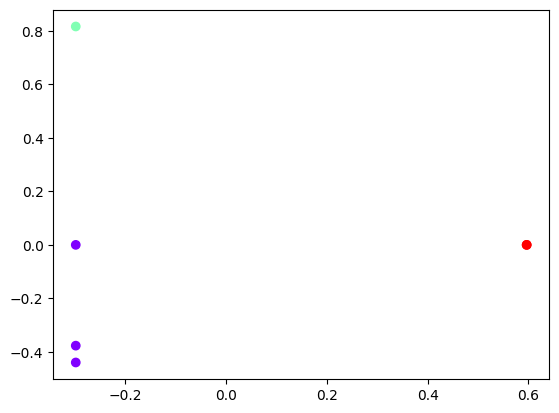

18 Document Classification
18.0.1 Review on Word Representation
Word representation is a foundational concept in Natural Language Processing (NLP). It is the process of representing words or phrases as numerical data that algorithms can process. Two popular word representation techniques are:
18.0.1.1 Bag of Words (BoW)
The Bag of Words (BoW) model represents a text corpus as a collection of word occurrences, ignoring grammar and word order. Each document in the corpus is represented by a vector, where each element corresponds to the count of a specific word in the document.
- Advantages:
- Simple and intuitive to implement.
- Works well for text classification problems.
- Disadvantages:
- Ignores word order and semantic meaning.
- Results in sparse and high-dimensional vectors.
18.0.1.2 Term Frequency-Inverse Document Frequency (TF-IDF)
The TF-IDF model extends BoW by emphasizing words that are significant in a document relative to the entire corpus. It assigns weights to words based on:
Term Frequency (TF): How frequently a word appears in a document.
Inverse Document Frequency (IDF): How unique or rare a word is across all documents.
Advantages:
- Reduces the impact of common words that provide little information (e.g., “the”, “is”).
- Helps in identifying more relevant features for downstream tasks.
Disadvantages:
- Computationally more intensive than BoW.
- Still ignores word order and context.
18.0.2 Python Implementation: Bag of Words
Below is a Python implementation of the Bag of Words model using CountVectorizer from the sklearn.feature_extraction.text module.
from sklearn.feature_extraction.text import CountVectorizer
# Define a sample corpus
CORPUS = [
'the sky is blue',
'sky is blue and sky is beautiful',
'the beautiful sky is so blue',
'i love blue cheese'
]
# Function to extract Bag of Words features
def bow_extractor(corpus, ngram_range=(1, 1)):
vectorizer = CountVectorizer(min_df=1, ngram_range=ngram_range)
features = vectorizer.fit_transform(corpus)
return vectorizer, features
# Extract features using Bag of Words
bow_vectorizer, bow_features = bow_extractor(CORPUS)
features = bow_features.todense()
# Display the dense feature matrix
print(features)18.0.3 Explanation of the Code
- Importing CountVectorizer:
CountVectorizeris used to transform text data into a vectorized form.
- CORPUS:
- This list contains sample text data to be analyzed.
- Function
bow_extractor:- Creates a
CountVectorizerinstance. - Converts the corpus into a sparse matrix of word counts.
- Creates a
- Feature Matrix:
bow_featuresstores the BoW representation of the corpus.todense()converts the sparse matrix to a dense format for easier readability.
- Output:
- A numerical matrix representing word frequencies in the corpus.
18.0.4 Sample Output
The feature matrix for the given CORPUS is:
[[1 0 0 0 1 0 0 0 1 1]
[0 1 1 0 1 0 0 0 2 1]
[0 0 0 1 1 0 0 0 1 1]
[0 0 0 0 0 1 1 1 0 1]]Each row corresponds to a document, and each column represents the frequency of a specific word.
18.0.5 Insights
- BoW creates a simple yet powerful representation for text data.
- When combined with additional techniques like TF-IDF or word embeddings, it forms the basis for advanced NLP tasks.
18.1 Text Clustering with K-Means and TF-IDF (Case 1)
Text clustering is an unsupervised machine learning technique used to group similar texts into clusters based on their features. Using TF-IDF as a feature extraction method and K-Means for clustering is a common and effective approach.
18.1.1 Steps for Text Clustering
- Text Preprocessing:
- Tokenization, stopword removal, stemming/lemmatization (optional for English texts).
- Feature Extraction:
- Represent the text as a numerical feature matrix using TF-IDF.
- Clustering with K-Means:
- Use the K-Means algorithm to partition the text data into (k) clusters.
18.1.2 Python Implementation
Below is the implementation of text clustering using TF-IDF and K-Means in Python.
from sklearn.feature_extraction.text import TfidfVectorizer
from sklearn.cluster import KMeans
import pandas as pd
# Sample Corpus
CORPUS = [
'the sky is blue',
'sky is blue and sky is beautiful',
'the beautiful sky is so blue',
'i love blue cheese',
'cheese is my favorite food',
'the sky has no limit',
'blue skies are beautiful',
'i enjoy eating blue cheese'
]
print(CORPUS)['the sky is blue', 'sky is blue and sky is beautiful', 'the beautiful sky is so blue', 'i love blue cheese', 'cheese is my favorite food', 'the sky has no limit', 'blue skies are beautiful', 'i enjoy eating blue cheese']# Step 1: TF-IDF Feature Extraction
def tfidf_extractor(corpus):
vectorizer = TfidfVectorizer(stop_words='english') # Remove English stopwords
tfidf_features = vectorizer.fit_transform(corpus)
return vectorizer, tfidf_features
tfidf_vectorizer, tfidf_features = tfidf_extractor(CORPUS)
print(tfidf_features) (0, 10) 0.7854120736496397
(0, 1) 0.6189732422046796
(1, 10) 0.8218625551345495
(1, 1) 0.3238497009820494
(1, 0) 0.4686825275616181
(2, 10) 0.5850147077886798
(2, 1) 0.4610426329897666
(2, 0) 0.6672312059824458
(3, 1) 0.3753175146682932
(3, 8) 0.7510695024801078
(3, 2) 0.5431678981930896
(4, 2) 0.45529690131060135
(4, 5) 0.6295652196782174
(4, 6) 0.6295652196782174
(5, 10) 0.5355023714515638
(5, 7) 0.8445337235242601
(6, 1) 0.3753175146682932
(6, 0) 0.5431678981930896
(6, 9) 0.7510695024801078
(7, 1) 0.30009988183746483
(7, 2) 0.43431125832140904
(7, 4) 0.6005471637666828
(7, 3) 0.6005471637666828The output shows a sparse matrix representation where each line follows the format:
(row, column) value
(0, 10) 0.7854120736496397This means: Document #0 (first document) Word #10 in vocabulary TF-IDF score of ~0.785
Let’s break it down more clearly:
- Row numbers (first number) represent documents from your corpus:
0 = 'the sky is blue'
1 = 'sky is blue and sky is beautiful'
2 = 'the beautiful sky is so blue'
3 = 'i love blue cheese'
4 = 'cheese is my favorite food'
5 = 'the sky has no limit'
6 = 'blue skies are beautiful'
7 = 'i enjoy eating blue cheese'- Column numbers (second number) represent words in the vocabulary. You can see what word corresponds to each number with:
feature_names = tfidf_vectorizer.get_feature_names_out()
for i, word in enumerate(feature_names):
print(f"{i}: {word}")0: beautiful
1: blue
2: cheese
3: eating
4: enjoy
5: favorite
6: food
7: limit
8: love
9: skies
10: sky- Values are the TF-IDF scores. Higher values mean:
- The word appears frequently in that document (high TF)
- The word is relatively rare across all documents (high IDF) For example:
(3, 8) 0.7510695024801078This means in document 3 (“i love blue cheese”), word #8 has a high TF-IDF score of ~0.751, suggesting it’s an important and distinctive word for this document. The matrix is “sparse” because it only shows non-zero values. If a word doesn’t appear in a document, that combination isn’t listed (implicitly zero).
import pandas as pd
# Get feature names
feature_names = tfidf_vectorizer.get_feature_names_out()
# Convert to dense matrix and then to DataFrame
dense_matrix = tfidf_features.todense()
df = pd.DataFrame(dense_matrix, columns=feature_names)
print(df) beautiful blue cheese eating enjoy favorite food \
0 0.000000 0.618973 0.000000 0.000000 0.000000 0.000000 0.000000
1 0.468683 0.323850 0.000000 0.000000 0.000000 0.000000 0.000000
2 0.667231 0.461043 0.000000 0.000000 0.000000 0.000000 0.000000
3 0.000000 0.375318 0.543168 0.000000 0.000000 0.000000 0.000000
4 0.000000 0.000000 0.455297 0.000000 0.000000 0.629565 0.629565
5 0.000000 0.000000 0.000000 0.000000 0.000000 0.000000 0.000000
6 0.543168 0.375318 0.000000 0.000000 0.000000 0.000000 0.000000
7 0.000000 0.300100 0.434311 0.600547 0.600547 0.000000 0.000000
limit love skies sky
0 0.000000 0.00000 0.00000 0.785412
1 0.000000 0.00000 0.00000 0.821863
2 0.000000 0.00000 0.00000 0.585015
3 0.000000 0.75107 0.00000 0.000000
4 0.000000 0.00000 0.00000 0.000000
5 0.844534 0.00000 0.00000 0.535502
6 0.000000 0.00000 0.75107 0.000000
7 0.000000 0.00000 0.00000 0.000000 # Step 2: K-Means Clustering
def kmeans_clustering(tfidf_features, n_clusters=2):
kmeans = KMeans(n_clusters=n_clusters, random_state=42) # KMeans with k=2
kmeans.fit(tfidf_features)
return kmeans
kmeans = kmeans_clustering(tfidf_features, n_clusters=2)
# Step 3: Assign Labels and Create DataFrame
labels = kmeans.labels_
corpus_with_labels = pd.DataFrame({'Text': CORPUS, 'Cluster': labels})
# Optional: Print Cluster Centers
print("Cluster Centers (TF-IDF Features):")
print(kmeans.cluster_centers_)Text Clustering Results:
Text Cluster
0 the sky is blue 0
1 sky is blue and sky is beautiful 0
2 the beautiful sky is so blue 0
3 i love blue cheese 1
4 cheese is my favorite food 1
5 the sky has no limit 0
6 blue skies are beautiful 0
7 i enjoy eating blue cheese 1
Cluster Centers (TF-IDF Features):
[[0.33581633 0.35583662 0. 0. 0. 0.
0. 0.16890674 0. 0.1502139 0.54555834]
[0. 0.22513913 0.47759202 0.20018239 0.20018239 0.20985507
0.20985507 0. 0.2503565 0. 0. ]]18.1.3 Explanation of the Code
- TF-IDF Vectorization:
- The
TfidfVectorizertransforms the text corpus into a sparse matrix where each row corresponds to a document, and each column corresponds to a TF-IDF score for a term.
- The
- K-Means Clustering:
- The
KMeansalgorithm partitions the documents into clusters. Each document is assigned to the cluster whose centroid is closest to its TF-IDF representation.
- The
- Assigning Labels:
- The
labels_attribute of the fitted K-Means model provides the cluster assignment for each document.
- The
- Results Visualization:
- A DataFrame is created to display the documents alongside their assigned clusters.
18.1.4 Output Example
For the given CORPUS, the output might look like this:
| Text | Cluster |
|---|---|
| the sky is blue | 0 |
| sky is blue and sky is beautiful | 0 |
| the beautiful sky is so blue | 0 |
| i love blue cheese | 1 |
| cheese is my favorite food | 1 |
| the sky has no limit | 0 |
| blue skies are beautiful | 0 |
| i enjoy eating blue cheese | 1 |
18.1.5 Key Insights
- Clusters:
- Cluster 0: Texts related to the sky and its characteristics.
- Cluster 1: Texts related to cheese and food.
- TF-IDF Significance:
- By using TF-IDF, common words like “the” and “is” are down-weighted, emphasizing distinctive words like “sky”, “blue”, and “cheese”.
- K-Means Limitations:
- Requires the number of clusters ((k)) to be predefined.
- Assumes clusters are spherical, which may not always hold true for textual data.
18.1.6 Code Details
# Get feature names
feature_names = tfidf_vectorizer.get_feature_names_out()
# Convert cluster centers to a DataFrame for better visualization
cluster_centers_df = pd.DataFrame(
kmeans.cluster_centers_,
columns=feature_names
)
print("Cluster Centers:")
print(cluster_centers_df)The kmeans.cluster_centers_ output shows the centroid (center point) of each cluster in the TF-IDF feature space. Since you specified n_clusters=2, there are two centroids, and each centroid is a vector with the same dimensions as your TF-IDF features.
Cluster Centers:
beautiful blue cheese eating enjoy favorite food \
0 0.335816 0.355837 0.000000 0.000000 0.000000 0.000000 0.000000
1 0.000000 0.225139 0.477592 0.200182 0.200182 0.209855 0.209855
limit love skies sky
0 0.168907 0.000000 0.150214 0.545558
1 0.000000 0.250357 0.000000 0.000000 Each row in the cluster centers represents: 1. The average position of all documents in that cluster 2. Values indicate the importance of each word to that cluster For example, if you see something like:
Cluster 0: high values for "sky", "blue", "beautiful"
→ This cluster likely represents documents about the sky
Cluster 1: high values for "cheese", "food", "eating"
→ This cluster likely represents documents about foodYou can find the most important words for each cluster like this:
# Get top 3 words that define each cluster
n_top_words = 3
for i in range(len(kmeans.cluster_centers_)):
# Get the indices of top words for this cluster
top_indices = kmeans.cluster_centers_[i].argsort()[-n_top_words:][::-1]
top_words = [feature_names[idx] for idx in top_indices]
top_values = [kmeans.cluster_centers_[i][idx] for idx in top_indices]
print(f"\nCluster {i} top words:")
for word, value in zip(top_words, top_values):
print(f"{word}: {value:.4f}")Cluster 0 top words:
sky: 0.5456
blue: 0.3558
beautiful: 0.3358
Cluster 1 top words:
cheese: 0.4776
love: 0.2504
blue: 0.2251This helps interpret what each cluster represents:
- Documents with similar word patterns are grouped together
- The cluster center shows the “typical” word importance pattern for that group
- Higher values in the cluster center indicate words that are more characteristic of that cluster
In your case, with 8 documents split into 2 clusters, you likely have:
- A cluster for sky/nature-related documents
- A cluster for food/cheese-related documents
18.2 K-Means Clustering (Case 2)
import numpy as np
import pandas as pd
import statsmodels.api as sm
import matplotlib.pyplot as plt
import seaborn as sns
from sklearn.cluster import KMeansfrom sklearn.feature_extraction.text import TfidfVectorizer
from sklearn.cluster import KMeans
import pandas as pd
# Sample Corpus
CORPUS = [
'The recipe calls for two cups of flour and a pinch of salt.',
'Artificial intelligence is revolutionizing the way we interact with technology.',
'Italian cuisine is famous for its pasta, pizza, and rich flavors.',
'Online learning platforms have become increasingly popular after the pandemic.',
'A balanced diet is essential for maintaining good physical health.',
'Machine learning algorithms are used to detect patterns in large datasets.'
]# Step 1: TF-IDF Feature Extraction
def tfidf_extractor(corpus):
vectorizer = TfidfVectorizer(stop_words='english') # Remove English stopwords
tfidf_features = vectorizer.fit_transform(corpus)
return vectorizer, tfidf_features
tfidf_vectorizer, tfidf_features = tfidf_extractor(CORPUS)# words
feature_names = tfidf_vectorizer.get_feature_names_out()
for i, word in enumerate(feature_names):
print(f"{i}: {word}")0: algorithms
1: artificial
2: balanced
3: calls
4: cuisine
5: cups
6: datasets
7: detect
8: diet
9: essential
10: famous
11: flavors
12: flour
13: good
14: health
15: increasingly
16: intelligence
17: interact
18: italian
19: large
20: learning
21: machine
22: maintaining
23: online
24: pandemic
25: pasta
26: patterns
27: physical
28: pinch
29: pizza
30: platforms
31: popular
32: recipe
33: revolutionizing
34: rich
35: salt
36: technology
37: used
38: wayimport pandas as pd
# Get feature names
feature_names = tfidf_vectorizer.get_feature_names_out()
# Convert to dense matrix and then to DataFrame
dense_matrix = tfidf_features.todense()
data_food = pd.DataFrame(dense_matrix, columns=feature_names)
print(data_food) algorithms artificial balanced calls cuisine cups datasets \
0 0.000000 0.000000 0.000000 0.408248 0.000000 0.408248 0.000000
1 0.000000 0.408248 0.000000 0.000000 0.000000 0.000000 0.000000
2 0.000000 0.000000 0.000000 0.000000 0.377964 0.000000 0.000000
3 0.000000 0.000000 0.000000 0.000000 0.000000 0.000000 0.000000
4 0.000000 0.000000 0.377964 0.000000 0.000000 0.000000 0.000000
5 0.361022 0.000000 0.000000 0.000000 0.000000 0.000000 0.361022
detect diet essential ... pizza platforms popular \
0 0.000000 0.000000 0.000000 ... 0.000000 0.000000 0.000000
1 0.000000 0.000000 0.000000 ... 0.000000 0.000000 0.000000
2 0.000000 0.000000 0.000000 ... 0.377964 0.000000 0.000000
3 0.000000 0.000000 0.000000 ... 0.000000 0.419871 0.419871
4 0.000000 0.377964 0.377964 ... 0.000000 0.000000 0.000000
5 0.361022 0.000000 0.000000 ... 0.000000 0.000000 0.000000
recipe revolutionizing rich salt technology used \
0 0.408248 0.000000 0.000000 0.408248 0.000000 0.000000
1 0.000000 0.408248 0.000000 0.000000 0.408248 0.000000
2 0.000000 0.000000 0.377964 0.000000 0.000000 0.000000
3 0.000000 0.000000 0.000000 0.000000 0.000000 0.000000
4 0.000000 0.000000 0.000000 0.000000 0.000000 0.000000
5 0.000000 0.000000 0.000000 0.000000 0.000000 0.361022
way
0 0.000000
1 0.408248
2 0.000000
3 0.000000
4 0.000000
5 0.000000
[6 rows x 39 columns]from sklearn.decomposition import PCA
# Dimension Reduction
model = PCA(n_components=2)
pca_features = model.fit_transform(data_food)
xf = pca_features[:,0]
yf = pca_features[:,1]
# Plotting the data
plt.scatter(xf, yf)
plt.show18.2.1 Code Analysis
The provided code uses Principal Component Analysis (PCA) to reduce the dimensionality of the TF-IDF feature matrix from multiple dimensions (one for each term in the corpus) to two components for visualization.
- PCA for Dimensionality Reduction:
- PCA is applied to reduce the TF-IDF matrix to two principal components (
n_components=2), which capture the most significant variance in the data. - The reduced dimensions (
xfandyf) are used as \(x\) and \(y\) coordinates for plotting.
- PCA is applied to reduce the TF-IDF matrix to two principal components (
- Scatter Plot:
- The scatter plot provides a 2D representation of the documents in the corpus.
- Documents positioned closer together in the plot indicate greater similarity in terms of their TF-IDF features.
18.2.2 Expected Output
A scatter plot showing points distributed in 2D space, with each point representing a document. The position of each point is determined by the reduced TF-IDF features after PCA.
18.2.3 Insights
- The plot visualizes how documents relate to one another in terms of their TF-IDF features.
- Clustering patterns might already be visible, even before applying clustering algorithms like K-Means.
# Selecting the feature
x = pca_features[:, 0:2]
x = pd.DataFrame(pca_features[:, 0:2])
# Clustering : How many clusters? Here we assume "3".
kmeans = KMeans(3)
kmeans.fit(x)
# Clustering Results
identified_clusters = kmeans.fit_predict(x)
identified_clusters
data_with_clusters = x.copy()
data_with_clusters['Clusters'] = identified_clusters
data_with_clustersplt.scatter(data_with_clusters[0],
data_with_clusters[1],
c=data_with_clusters['Clusters'],
cmap='rainbow')
18.3 Elbow Method
import numpy as np
import pandas as pd
import statsmodels.api as sm
import matplotlib.pyplot as plt
import seaborn as sns
from sklearn.cluster import KMeans# Loading the Data
data_city = {
'Country': [
'India', 'Japan', 'Brazil', 'South Africa', 'Italy', 'Russia',
'Mexico', 'China', 'Egypt', 'Australia', 'Canada', 'Spain'
],
'Latitude': [
28.61, 35.68, -15.78, -33.92, 41.90, 55.75,
19.43, 39.90, 30.04, -35.28, 45.42, 40.42
],
'Longitude': [
77.21, 139.69, -47.93, 18.42, 12.49, 37.62,
-99.13, 116.40, 31.24, 149.13, -75.70, -3.70
],
'Language': [
'Hindi', 'Japanese', 'Portuguese', 'Afrikaans', 'Italian', 'Russian', 'Spanish', 'Mandarin', 'Arabic', 'English', 'English', 'Spanish'
]
}
data_city = pd.DataFrame(data_city)
data_city# Selecting the feature
x = data_city.iloc[:,1:3] # 1t for rows and second for columns
# Clustering
kmeans = KMeans(3)
kmeans.fit(x)
# Clustering Results
identified_clusters = kmeans.fit_predict(x)
identified_clusters
data_with_clusters = data_city.copy()
data_with_clusters['Clusters'] = identified_clusters
data_with_clustersplt.scatter(data_with_clusters['Longitude'],
data_with_clusters['Latitude'],
c=data_with_clusters['Clusters'],
cmap='rainbow')
# Number of Clusters : Elbow Method
num_clusters = list(range(1,7))
inertias = []
for i in num_clusters:
kmeans_model = KMeans(n_clusters = i)
kmeans_model.fit(x)
print(kmeans_model.inertia_)
inertias.append(kmeans_model.inertia_)
plt.plot(num_clusters, inertias, '-o')
plt.title('The Elbow Method')
plt.xlabel('Number of clusters (k)')
plt.ylabel('Inertia')
plt.show()18.4 Text Clustering with Raw Data (Case 3)
import numpy as np
import pandas as pd
import statsmodels.api as sm
import matplotlib.pyplot as plt
import seaborn as sns
from sklearn.cluster import KMeansimport pandas as pd
data_all = pd.read_csv('Clustering_Data/data_clustering.csv')
data_all.shapedata = data_all[:1000]
data# explore the data
data.info()data = data.dropna(axis=0, how='any')
data.info()# data pre-processing
from sklearn.feature_extraction.text import TfidfVectorizer
from sklearn.cluster import KMeansdocuments = data['abstract'].values.astype("U") # unicode strings
documentsvectorizer = TfidfVectorizer(stop_words='english')
x_data = vectorizer.fit_transform(documents)
print(x_data.shape)# Number of Clusters : Elbow Method
no_clusters = list(range(1,50))
inertias = []
for i in no_clusters:
kmeans_model = KMeans(n_clusters = i)
kmeans_model.fit(x_data)
print(kmeans_model.inertia_)
inertias.append(kmeans_model.inertia_)
plt.plot(no_clusters, inertias, '-o')
plt.title('The Elbow Method')
plt.xlabel('Number of clusters (k)')
plt.ylabel('Inertia')
plt.show()k = 20
model = KMeans(n_clusters=k, init='k-means++', max_iter=100, n_init=1)
model.fit(x_data)
data['cluster'] = model.labels_data.to_csv('Clustering_Data/data_clustering_out.csv')
data.head()18.5 Word2Vec based Clustering (Case 4)
import os
import random
import re
import string
import nltk
nltk.download('punkt')
import numpy as np
import pandas as pd
from gensim.models import Word2Vec
from nltk import word_tokenize
from nltk.corpus import stopwords
nltk.download("stopwords")
from sklearn.cluster import MiniBatchKMeans
from sklearn.metrics import silhouette_samples, silhouette_score
SEED = 42
random.seed(SEED)
os.environ["PYTHONHASHSEED"] = str(SEED)
np.random.seed(SEED)# Clean and Tokenize Data
def clean_text(text, tokenizer, stopwords):
"""Pre-process text and generate tokens
Args:
text: Text to tokenize.
Returns:
Tokenized text.
"""
text = str(text).lower() # Lowercase words
text = re.sub(r"\[(.*?)\]", "", text) # Remove [+XYZ chars] in content
text = re.sub(r"\s+", " ", text) # Remove multiple spaces in content
text = re.sub(r"\w+…|…", "", text) # Remove ellipsis (and last word)
text = re.sub(r"(?<=\w)-(?=\w)", " ", text) # Replace dash between words
text = re.sub(
f"[{re.escape(string.punctuation)}]", "", text
) # Remove punctuation
tokens = tokenizer(text) # Get tokens from text
tokens = [t for t in tokens if not t in stopwords] # Remove stopwords
tokens = ["" if t.isdigit() else t for t in tokens] # Remove digits
tokens = [t for t in tokens if len(t) > 1] # Remove short tokens
return tokenscustom_stopwords = set(stopwords.words("english") + ["news", "new", "top"])
text_columns = ["abstract", "cluster"]
df = data.copy()
df["content"] = df["abstract"].fillna("")
for col in text_columns:
df[col] = df[col].astype(str)
# Create text column based on title, description, and content
df["text"] = df[text_columns].apply(lambda x: " | ".join(x), axis=1)
df["tokens"] = df["text"].map(lambda x: clean_text(x, word_tokenize, custom_stopwords))
# Remove duplicated after preprocessing
_, idx = np.unique(df["tokens"], return_index=True)
df = df.iloc[idx, :]
# Remove empty values and keep relevant columns
df = df.loc[df.tokens.map(lambda x: len(x) > 0), ["text", "tokens"]]
print(f"Original dataframe: {data.shape}")
print(f"Pre-processed dataframe: {df.shape}")docs = df["text"]
# Generate Document Vectors
# Train Word2Vec Model
tokenized_docs = df["tokens"]
model = Word2Vec(sentences=tokenized_docs, workers=1, seed=SEED)model.wv.most_similar("speaking")# Create Document Vectors from Word Embedding
def vectorize(list_of_docs, model):
"""Generate vectors for list of documents using a Word Embedding
Args:
list_of_docs: List of documents
model: Gensim's Word Embedding
Returns:
List of document vectors
"""
features = []
for tokens in list_of_docs:
zero_vector = np.zeros(model.vector_size)
vectors = []
for token in tokens:
if token in model.wv:
try:
vectors.append(model.wv[token])
except KeyError:
continue
if vectors:
vectors = np.asarray(vectors)
avg_vec = vectors.mean(axis=0)
features.append(avg_vec)
else:
features.append(zero_vector)
return features
vectorized_docs = vectorize(tokenized_docs, model=model)
len(vectorized_docs), len(vectorized_docs[0])# Cluster Documents Using (Mini-batches) K-means
def mbkmeans_clusters(
X,
k,
mb,
print_silhouette_values,
):
"""Generate clusters and print Silhouette metrics using MBKmeans
Args:
X: Matrix of features.
k: Number of clusters.
mb: Size of mini-batches.
print_silhouette_values: Print silhouette values per cluster.
Returns:
Trained clustering model and labels based on X.
"""
km = MiniBatchKMeans(n_clusters=k, batch_size=mb).fit(X)
print(f"For n_clusters = {k}")
print(f"Silhouette coefficient: {silhouette_score(X, km.labels_):0.2f}")
print(f"Inertia:{km.inertia_}")
if print_silhouette_values:
sample_silhouette_values = silhouette_samples(X, km.labels_)
print(f"Silhouette values:")
silhouette_values = []
for i in range(k):
cluster_silhouette_values = sample_silhouette_values[km.labels_ == i]
silhouette_values.append(
(
i,
cluster_silhouette_values.shape[0],
cluster_silhouette_values.mean(),
cluster_silhouette_values.min(),
cluster_silhouette_values.max(),
)
)
silhouette_values = sorted(
silhouette_values, key=lambda tup: tup[2], reverse=True
)
for s in silhouette_values:
print(
f"Cluster {s[0]}: Size:{s[1]} | Avg:{s[2]:.2f} | Min:{s[3]:.2f} | Max: {s[4]:.2f}"
)
return km, km.labels_# Definition of Clusters
clustering, cluster_labels = mbkmeans_clusters(
X=vectorized_docs,
k= 16,
mb=500,
print_silhouette_values=True,
)
df_clusters = pd.DataFrame({
"text": docs,
"tokens": [" ".join(text) for text in tokenized_docs],
"cluster": cluster_labels
})# Qualitative Review of Clusters
print("Most representative terms per cluster (based on centroids):")
for i in range(16):
tokens_per_cluster = ""
most_representative = model.wv.most_similar(positive=[clustering.cluster_centers_[i]], topn=10)
for t in most_representative:
tokens_per_cluster += f"{t[0]} "
print(f"Cluster {i}: {tokens_per_cluster}")test_cluster = 10
most_representative_docs = np.argsort(
np.linalg.norm(vectorized_docs - clustering.cluster_centers_[test_cluster], axis=1)
)
for d in most_representative_docs[:5]:
print(docs[d])
print("-------------")